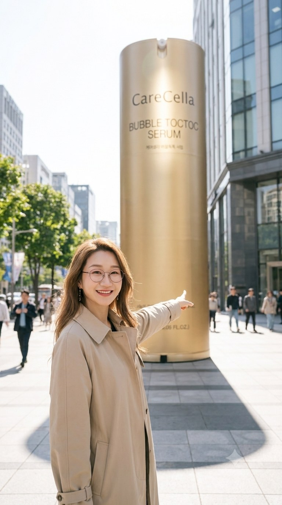

오늘의 프롬프트AI로사쌤 · 23번
광장에 우뚝 선 거대한 제품, 내가 소개하는 광고 영상
내 사진과 제품 사진으로 광고 사진을 만들고, 그 사진으로 영상을 만드는 두 단계예요. 남녀 누구나, 어떤 제품이든 쓸 수 있어요.
1단계광고 사진 만들기

제미나이나 챗GPT에 본인 사진(이미지 1)과 제품 사진(이미지 2)을 이 순서대로 올리고, 아래 프롬프트를 붙여넣으세요.
이미지 1의 인물과 이미지 2의 제품을 합성한 실사 광고 사진.
인물: 이미지 1 속 얼굴을 그대로 반영. 이목구비, 얼굴형, 헤어스타일, 안경을 바꾸지 말 것. 여성이면 여성, 남성이면 남성으로 표현. 화사하게 미소 짓는 밝은 얼굴, 제품 광고 전문 모델 분위기. 옷은 아무 무늬와 장식이 없는 베이지색 코트. 이미지 1에 있던 배지, 브로치, 옷의 글자는 가져오지 말 것.
제품: 이미지 2의 제품을 그대로 사용. 형태, 비율, 색상, 라벨 디자인, 인쇄된 글자를 하나도 바꾸지 말고 다시 디자인하지 말 것. 제품은 1개만, 앞면이 카메라와 평행하게 정면을 향해 글자가 반듯하고 또렷하게 보이게.
장면: 도심 광장 한가운데에 제품이 5층 건물만큼 거대한 크기로 똑바로 서 있음. 거대한 제품 표면에 햇빛이 은은하게 비치고 바닥에 큰 그림자가 드리움. 인물은 실제 크기로 제품 바로 앞에 서서 한 팔을 옆으로 펴 뒤의 제품을 소개하듯 가리키며 카메라를 향해 웃고 있음. 손은 손가락 다섯 개의 자연스러운 모양. 주변에는 멀리 흐릿한 행인 몇 명과 가로수, 빌딩.
구도: 인물은 화면 아래쪽에 머리부터 허리까지 크게, 그 뒤로 거대한 제품이 화면 위쪽까지 솟아 있는 낮은 앵글. 얼굴과 제품 글자 모두 선명하게, 맑은 낮의 햇살.
고해상도 4K 실사, 인물 얼굴과 제품 글자까지 선명하게, 제품에 원래 있는 글자 외에는 옷과 간판을 포함해 글자·알파벳·숫자·로고·워터마크 없음, 세로 9:16.
2단계광고 영상 만들기
1단계에서 만든 사진을 영상 도구에 첫 장면으로 올리고, 아래 프롬프트를 붙여넣으세요.
첫 프레임 속 인물의 얼굴, 헤어스타일, 안경, 의상을 끝까지 그대로 유지. 제품은 항상 1개만 존재하고, 건물만 한 크기로 제자리에 움직이지 않고 서 있으며, 형태, 색, 라벨, 인쇄된 글자를 끝까지 그대로 유지.
표정: 인물은 처음부터 끝까지 부드럽고 화사한 미소 하나만 유지. 입을 크게 벌리거나 윙크하지 않고 말하지 않음. 제품을 가리키는 자세도 그대로 유지.
0~3초: 인물이 미소 지으며 서 있고 머리카락과 코트 자락이 바람에 살짝 흔들림. 구름 그림자가 거대한 제품 위로 천천히 지나감.
3~9초: 카메라가 인물의 얼굴에서 시작해 뒤의 거대한 제품을 따라 위로 아주 천천히 올라가며 라벨 글자를 차례로 또렷하게 보여줌.
9~10초: 카메라가 제품 윗부분에서 멈추고 햇살이 제품 가장자리에서 반짝임.
소리: 광장의 잔잔한 소음과 웅장하고 밝은 음악. 대사 없음.
4K 고해상도 실사 영상, 10초 원테이크, 움직임은 느리고 부드럽게, 얼굴과 손 변형 없음, 화면에 자막이나 새로운 글자·로고 없음.
출처 · AI로사쌤